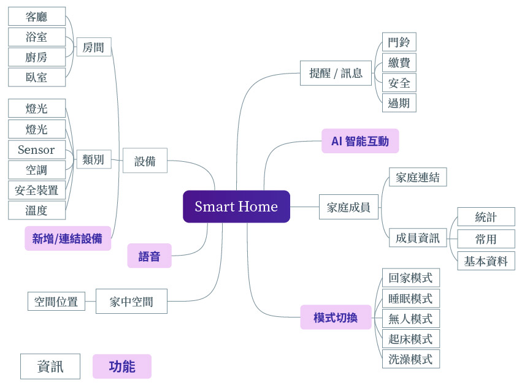

Smart Home App
smart your life
專案時間
2018. 02/01 - 2018. 07/30
使用工具
Adobe AI
HTML5、CSS、JS
XMind
工作內容
Web UI Design
Mobile UI Design
primary UX Research
產品介紹
Smart home app鑑於現在智能家電設備的出現，如何能夠掌握家庭生活的狀況並最適化是首要的課題。在家裡透過藍芽連結各家的智能產品，出門在外則利用WiFi隨時掌握資訊，並且透過APP可以遠端設定產品的歷程與自己的作息連動，回家的同時，家中的環境一切都給打理好！
我們認為，產品的使用最終還是要回歸到「人」，利用智能家電在家庭成員之間搭成互動的橋梁，使產品與使用者之間不再只是冰冷冷的關係，最終是能夠讓家庭與產品連結在一起。
我們將smart home app擬人化，化身為一個智能機器人，使用者進入APP後將會與他交談，宛如與一個活生生的人物對話一般。智能機器人能夠主動偵測出附近的家電、並調整至適合家中環境的狀態。
產品分析
| 評估項目 | Gideon | Fibaro |
|---|---|---|
| 產品特色 | 以單一app連結不同品牌的產品、能夠對產品下達條件式指令、聲控產品 | 以單一app連結不同品牌的產品 |
| 顏色 | ||
| 視覺性格 | 一致、沉穩、神秘 | 現代、科技、神秘 |
| 圖樣表現 | 扁平化 | 擬物化 |
| 品牌傳達 | 介面有高度的一致性、LOGO與介面除了顏色外，表現手法關連性不高、app特色於網頁傳達清楚 | 考慮到使用族群從年幼到長輩，擬真的圖樣更能減少使用者誤觸與提高認知，給予安全、便利的感受。 |
| 使用者評價 | 連結不同品牌的產品仍會發生問題，ㄧ種可能產品是正常運作，但是在流程教學上，使用者並不清楚。另一種是在手機系統、產品型號並不相容。 | 系統的穩定性不高，以及使用者對於擬物化的設計感到過時。andorid問題似乎比ios還多，使用者介面與操作性上似乎不符合潮流。 |
產品功能
針對家中的各種可能的需求條列出來，之後將項目拆解為「資訊」與「功能」，兩者最主要的差別是：使用者只能夠被動的接受「資訊」，但是能主動的操作「功能」。

UI flow
簡易版頁面流程，分為5大功能頁面：設備、場景模式、智慧幫手、家庭以及我(設定)。
設計規範
色彩計畫

圖標 icon
Wireframes